openshift 4.16 integration with Azure SSO with group sync operator
OpenShift support integration with Azure SSO through OpenID. In this article, we will show you how to integrate OpenShift 4.16 with Azure SSO.
azure portal setting
In your Azure portal, go to Azure Active Directory -> App registrations -> New registration

As you can see, we create a app registration
azure-ocp-sso. Let us find the redirect url for the
openshift sso.
Get openshift sso callback host from openshift cli:
oc get route -n openshift-authentication
# NAME HOST/PORT PATH SERVICES PORT TERMINATION WILDCARD
# oauth-openshift oauth-openshift.apps.demo-01-rhsys.wzhlab.top oauth-openshift 6443 passthrough/Redirect NoneSo the redirect url is
https://oauth-openshift.apps.demo-01-rhsys.wzhlab.top/oauth2callback/azure-ocp-sso
. Now we can create the app registration in Azure
portal.

After the app registration is created, we can get the
tenant id and client id from the
Overview page. Write it down for later use.

And create a client secret in the
Certificates & secrets page.

Write it down for later use.

Now, we need go add some permissions to the app registration.
Go to API permissions page, click
Add a permission.

Add profile and email permissions
with Delegated permissions.

For group sync, we need to add
Directory.Read.All
GroupMember.Read.All User.Read.All
permission with Application permissions.

After the permissions are added, we need to grant admin consent for the permissions.

And get the endpoint of azure, write it down.

We also create some groups and add some users to the groups.
- L1Support(group)
- l1.u01(user)
- l1.u02(user)
- L2Support(group)
- l2.u01(user)
- l2.u02(user)
- L3Support(group)
- l3.u01(user)
- l3.u02(user)
- RetalixSupport(group)
- ret.u01(user)
- ret.u02(user)
- POSIMViewer(group)
- pos.v01(user)
- pos.v02(user)
- POSIMSupport(group)
- pos.s01(user)
- pos.s02(user)
- POSIMAdmin(group)
- pos.a01(user)
- pos.a02(user)


openshift sso setting
Go to openshift web console, go to
Administration -> Cluster Settings
-> Configuration, search for
oauth.
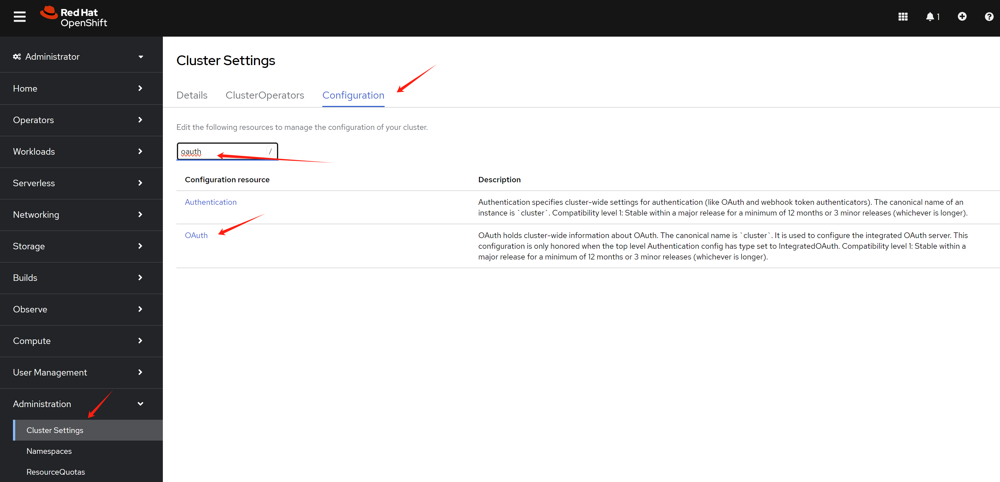
In the oauth page, click Add to add
a new OpenID Connect.
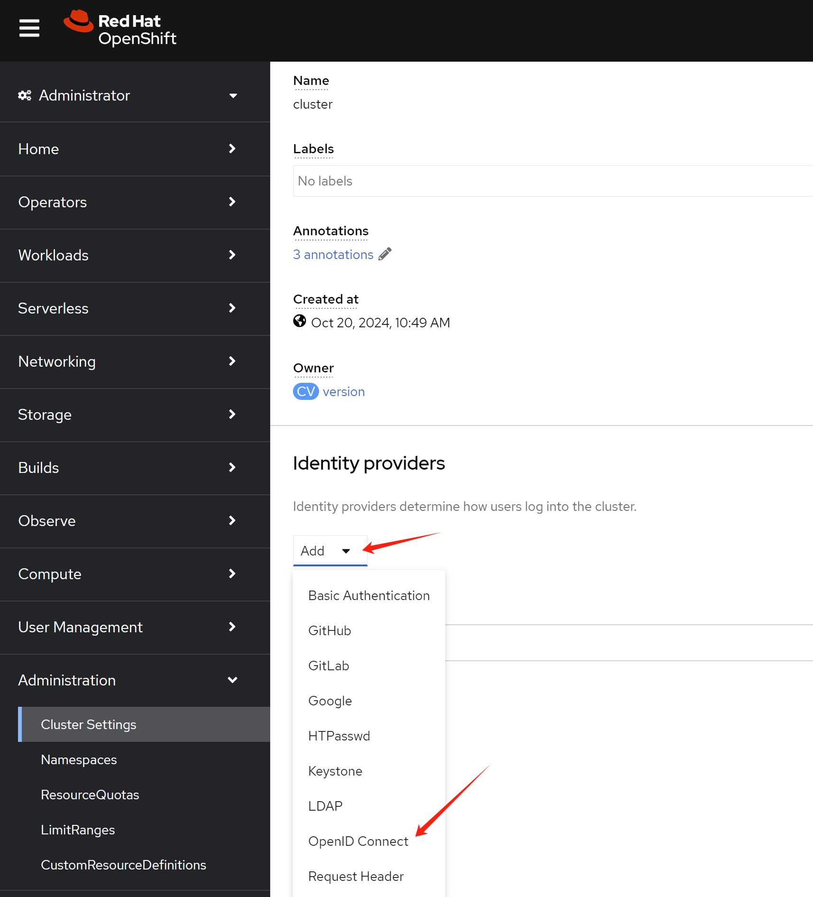
Input the name client id
client secret endpoint in the
openshift sso page.
[!NOTE] The
namemust be the name of theapp registrationin Azure portal.The
preferred usernamemust beupn.
- https://learn.microsoft.com/en-us/azure/openshift/configure-azure-ad-ui
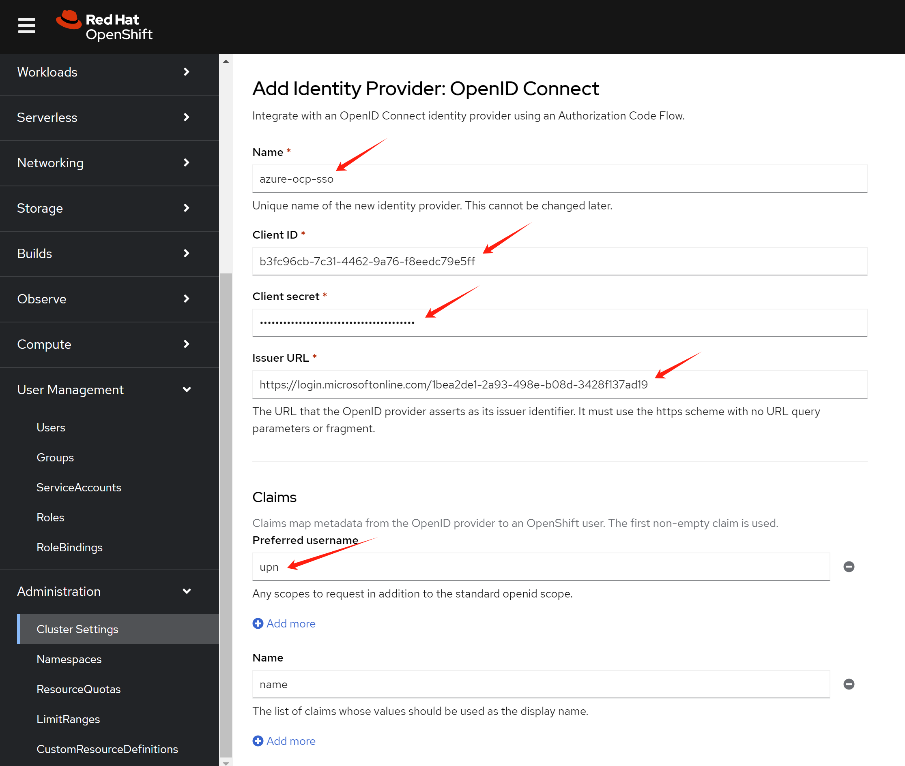
If you make something wrong, and want to change the config,
you can edit the oauth object in openshift.
oc edit oauth/clusterIf you want to remove a user:
oc delete user <username>
oc delete identity <user-identity>openshift group sync
OpenShift SSO integration with azure will create user in
openshift during the first login. But the group information will
not be synced. We need to use Group Sync Operator
to sync the group information.
Reference:
- https://cloud.redhat.com/experts/idp/az-ad-grp-sync/
In operator hub, search group and install the
Group Sync Operator.
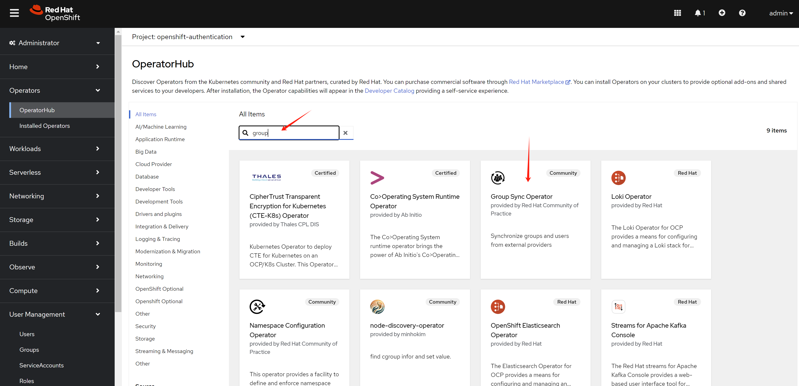
Keep the default setting, and install.
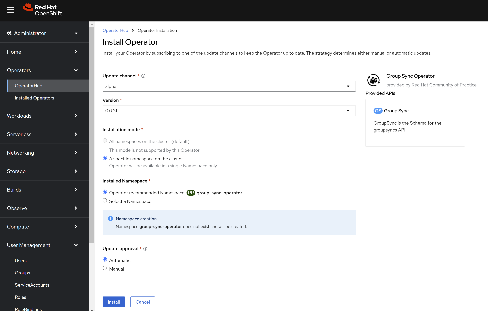
Create azure secret in openshift.
oc create secret generic azure-group-sync -n group-sync-operator \
--from-literal=AZURE_TENANT_ID=$AZURE_TENANT_ID \
--from-literal=AZURE_CLIENT_ID=$AZURE_CLIENT_ID \
--from-literal=AZURE_CLIENT_SECRET=$AZURE_CLIENT_SECRETCreate a GroupSync object in openshift, with the
example config below.
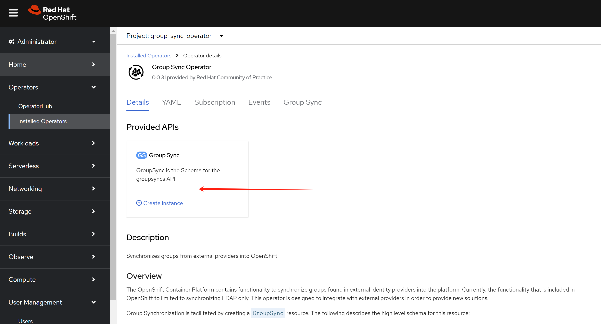
apiVersion: redhatcop.redhat.io/v1alpha1
kind: GroupSync
metadata:
name: azure-groupsync
namespace: group-sync-operator
spec:
providers:
- name: azure
azure:
credentialsSecret:
name: azure-group-sync
namespace: group-sync-operator
groups:
- L1support
- L2support
- L3support
- RetalixSupport
- POSIMViewer
- POSIMSupport
- POSIMAdmin
prune: false
schedule: '* * * * *'openshift role and rolebinding
Now, user can login, and group information is synced. We need to create role and rolebinding for the groups. So after user login, it has the correct permission.
Now, we create role for different groups. Below is an example for the roles. You can create your own roles based on your requirement.
# create namespace for demo
oc create ns retalix
oc create ns posim
# define the roles, change the rules based on your requirement
cat << EOF > ${BASE_DIR}/data/install/demo.role.yaml
---
apiVersion: rbac.authorization.k8s.io/v1
kind: ClusterRole
metadata:
name: l1-support-role
rules:
- apiGroups: [""]
resources: ["pods", "services", "events", "namespaces"]
verbs: ["get", "list", "watch"]
- apiGroups: ["apps"]
resources: ["deployments", "replicasets"]
verbs: ["get", "list", "watch"]
---
apiVersion: rbac.authorization.k8s.io/v1
kind: ClusterRole
metadata:
name: l2-support-role
rules:
- apiGroups: [""]
resources: ["pods", "services", "events", "namespaces", "configmaps", "endpoints"]
verbs: ["get", "list", "watch", "update"]
- apiGroups: ["apps"]
resources: ["deployments", "replicasets", "daemonsets", "statefulsets"]
verbs: ["get", "list", "watch", "update"]
- apiGroups: [""]
resources: ["pods/log", "pods/exec"]
verbs: ["get", "list", "create"]
---
apiVersion: rbac.authorization.k8s.io/v1
kind: ClusterRole
metadata:
name: l3-support-role
rules:
- apiGroups: ["*"]
resources: ["*"]
verbs: ["get", "list", "watch", "create", "update", "patch", "delete"]
- apiGroups: [""]
resources: ["pods/exec", "pods/log"]
verbs: ["create", "get", "list"]
- apiGroups: ["security.openshift.io"]
resources: ["securitycontextconstraints"]
verbs: ["get", "list", "watch"]
---
apiVersion: rbac.authorization.k8s.io/v1
kind: Role
metadata:
name: retalix-support-role
namespace: retalix
rules:
- apiGroups: [""]
resources: ["pods", "pods/log", "pods/exec", "services", "endpoints", "persistentvolumeclaims", "configmaps", "secrets", "events", "namespaces"]
verbs: ["get", "list", "watch", "create", "update", "patch"]
- apiGroups: ["apps"]
resources: ["deployments", "daemonsets", "replicasets", "statefulsets"]
verbs: ["get", "list", "watch", "create", "update", "patch"]
- apiGroups: ["batch"]
resources: ["jobs", "cronjobs"]
verbs: ["get", "list", "watch", "create", "update", "patch"]
- apiGroups: ["networking.k8s.io"]
resources: ["ingresses"]
verbs: ["get", "list", "watch"]
- apiGroups: ["route.openshift.io"]
resources: ["routes"]
verbs: ["get", "list", "watch"]
---
apiVersion: rbac.authorization.k8s.io/v1
kind: Role
metadata:
name: posim-viewer-role
namespace: posim
rules:
- apiGroups: ["*"]
resources: ["*"]
verbs: ["get", "list", "watch"]
---
apiVersion: rbac.authorization.k8s.io/v1
kind: Role
metadata:
name: posim-support-role
namespace: posim
rules:
- apiGroups: [""]
resources: ["pods", "pods/log", "pods/exec", "services", "endpoints", "configmaps", "events", "namespaces"]
verbs: ["get", "list", "watch", "create", "update", "patch"]
- apiGroups: ["apps"]
resources: ["deployments", "replicasets", "statefulsets"]
verbs: ["get", "list", "watch", "update", "patch"]
- apiGroups: ["batch"]
resources: ["jobs"]
verbs: ["get", "list", "watch", "create"]
---
apiVersion: rbac.authorization.k8s.io/v1
kind: Role
metadata:
name: posim-admin-role
namespace: posim
rules:
- apiGroups: ["*"]
resources: ["*"]
verbs: ["*"]
EOF
oc apply -f ${BASE_DIR}/data/install/demo.role.yaml
# oc delete -f ${BASE_DIR}/data/install/demo.role.yamlApply the role to groups with rolebinding. First, select a group.
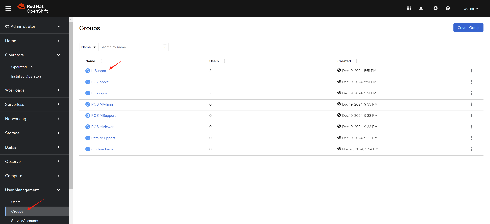
Switch to rolebinding view, and create a rolebinding for the group.
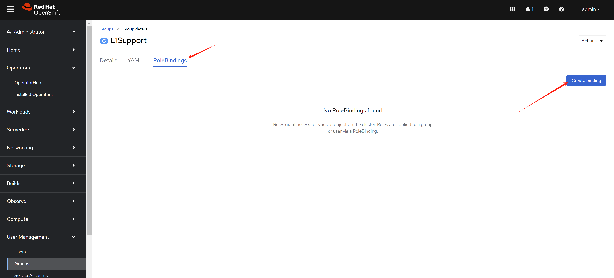
We want to define cluster role binding for the group. So we
select ClusterRoleBinding in the
RoleBinding page. Give it a name, and select the
role we created before.
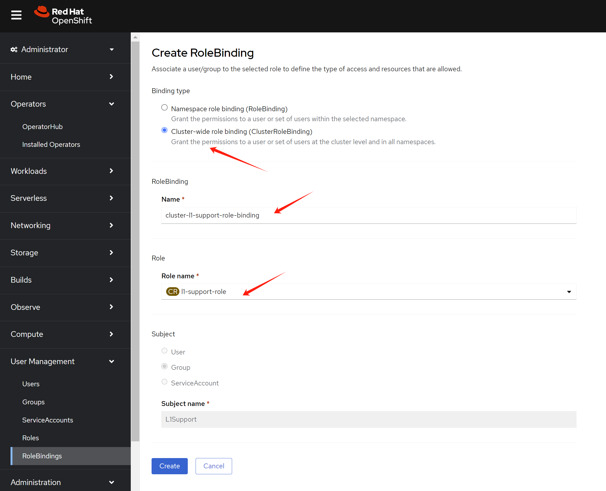
If you want to add a namespaced role to another group. Select
RoleBinding in the RoleBinding page.
Give it a name, find the namespace, and select the role we
created before.
test with login
First, we try to login as l1.u01 user, which is
in L1Support group.

Login with l1.u01 user’s
user principal name and password. You can see the
web console.

If you try to login as ret.u01 user, which is in
RetalixSupport group, you can see the web
console.
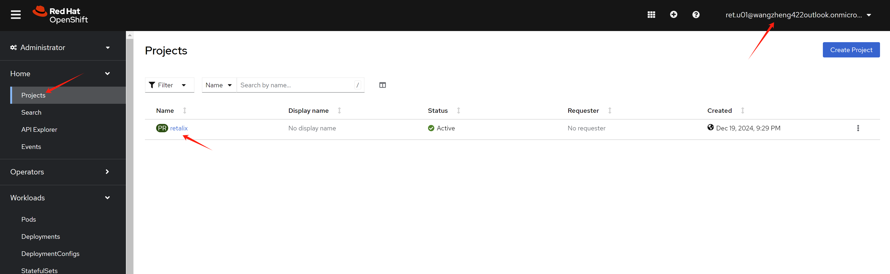
After user login, you can see the user in the
User page from an administrator account.
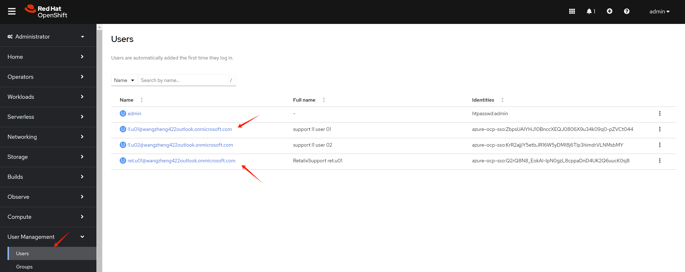
You can see group synced.
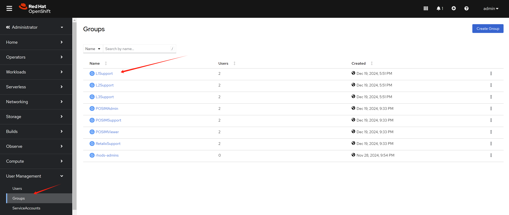
And user belongs to the group also synced.
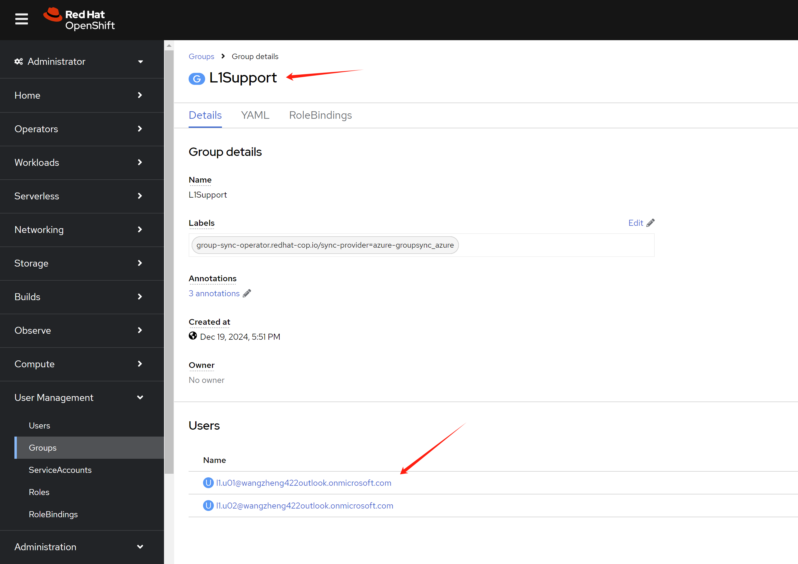
end
https://cloud.redhat.com/experts/idp/entra-id-with-group-names/
https://vmware.fqdn.nl/2023/05/10/openshift-oauth-with-azure-idp/
oc get pod -n openshift-authentication
oc logs -n openshift-authentication oauth-openshift-7dcdcb7c74-fvtdr